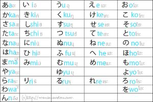

ローマ字 (Rōmaji)
ประวัติความเป็นมาของโรมาจิ โรมาจิ (ローマ字) คือการนำ ตัวอักษรโรมันหรือตัวอักษรละติน มาใช้เขียนภาษาญี่ปุ่นแทนตัวอักษรญี่ปุ่น เช่น คันจิ ฮิรางานะ และคาตาคานะ คำว่า ローマ字 มีความหมายตรงตัวว่า “ตัวอักษรโรมัน” โรมาจิไม่ได้เป็นตัวอักษรดั้งเดิมของญี่ปุ่น แต่ถูกนำเข้ามาและพัฒนาระบบการเขียนให้เหมาะกับภาษาญี่ปุ่น จุดเริ่มต้นของโรมาจิ โรมาจิเริ่มมีบทบาทในญี่ปุ่นจากการติดต่อกับชาวยุโรปในช่วง คริสต์ศตวรรษที่ 16 โดยเฉพาะชาวโปรตุเกสและมิชชันนารีที่เดินทางเข้ามาในญี่ปุ่น ชาวต่างชาติเหล่านี้ต้องการวิธีเขียนภาษาญี่ปุ่นด้วยตัวอักษรที่ตนเองอ่านได้ จึงเกิดการใช้ตัวอักษรละตินในการบันทึกเสียงภาษาญี่ปุ่น หนึ่งในตัวอย่างสำคัญคือ โรจิ เดอ โกเอ (Rodrigues) และมิชชันนารีชาวโปรตุเกสที่มีบทบาทในการศึกษาภาษาญี่ปุ่นและจัดทำเอกสารเกี่ยวกับภาษา ทำให้เกิดการบันทึกภาษาญี่ปุ่นด้วยตัวอักษรละตินมากขึ้น ในช่วงปลายคริสต์ศตวรรษที่ 16 และต้นคริสต์ศตวรรษที่ 17 มีการจัดทำหนังสือภาษาญี่ปุ่นด้วยตัวอักษรละติน เช่น พจนานุกรมและหนังสือเกี่ยวกับภาษาและศาสนา เอกสารเหล่านี้มีความสำคัญต่อการศึกษาการออกเสียงภาษาญี่ปุ่นในอดีต การพัฒนาโรมาจิในญี่ปุ่น หลังจากญี่ปุ่นเข้าสู่ยุคสมัยใหม่ การติดต่อกับประเทศตะวันตกเพิ่มมากขึ้น โรมาจิจึงมีความสำคัญมากขึ้น โดยเฉพาะในด้านการศึกษา การเผยแพร่ความรู้ และการสื่อสารกับชาวต่างชาติ ในช่วง สมัยเมจิ มีการถกเถียงกันว่าญี่ปุ่นควรใช้ตัวอักษรแบบใดในการเขียนภาษา มีบางกลุ่มเสนอให้ใช้ตัวอักษรละตินแทนคันจิและคานะ เพื่อทำให้ญี่ปุ่นสามารถติดต่อกับประเทศตะวันตกได้สะดวกขึ้น ต่อมาจึงเกิดระบบการเขียนโรมาจิหลายรูปแบบ โดยระบบที่สำคัญคือ เฮปเบิร์น (Hepburn) และ นิฮงชิกิ (Nihon-shiki)
